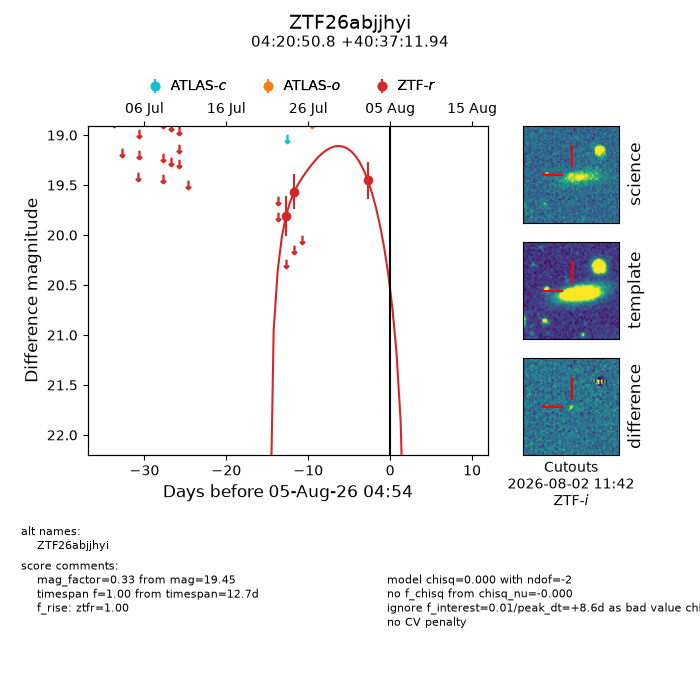
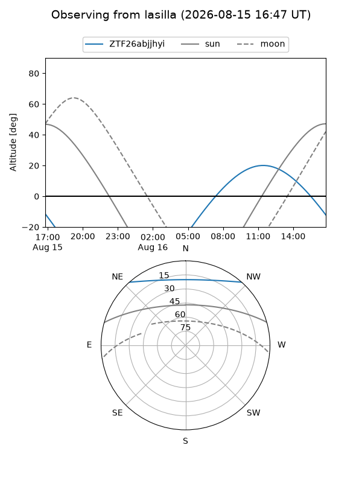
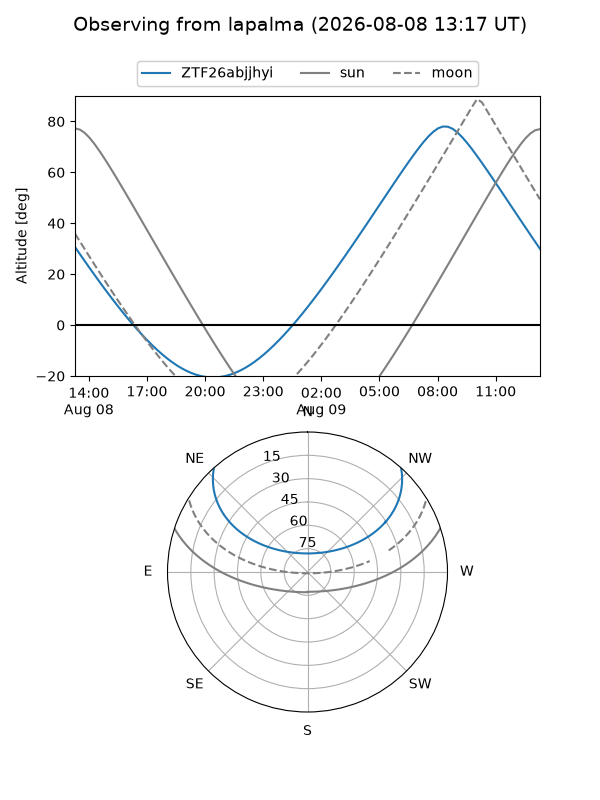
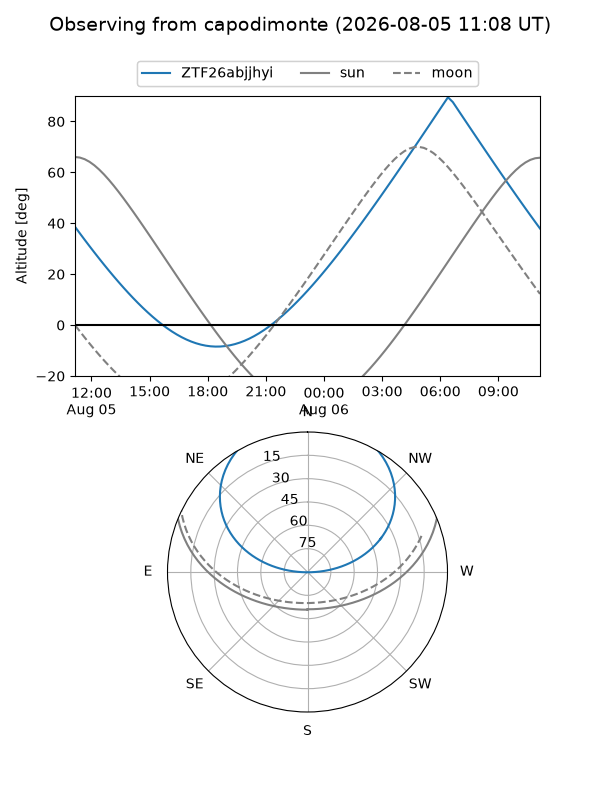
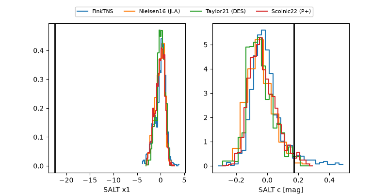

ZTF26abjjhyi
Target ZTF26abjjhyi at 2026-08-05 16:58
Aliases and brokers:
FINK-ZTF: ztf.fink-portal.org/ZTF26abjjhyi
Lasair-ZTF: lasair-ztf.lsst.ac.uk/objects/ZTF26abjjhyi
ALeRCE-ZTF: alerce.online/object/ZTF26abjjhyi
Direct TNS query: direct search
alt names
ZTF26abjjhyi (ztf,fink_ztf)
Coordinates:
equatorial (ra, dec) = 65.2115,+40.61998
equatorial (HMS+DMS) = 04:20:50.77,+40:37:11.94
galactic (l, b) = (160.1653,-6.64759)
Flags:
peak dt: +9.1
Photometry:
last ztfr=19.45
3 ztfr detections
Lightcurve

Visibility



Additional plots
